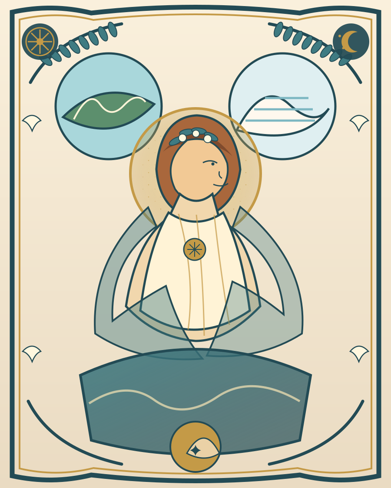

不把旅程做成景点清单，而是把沿途的水、石头、圣所、城市、海路与故事连起来。Not a checklist of sights, but a journey connecting water, stone, sanctuaries, cities, sea routes and stories.
主线是达拉曼机场 → 棉花堡 / 希拉波利斯 → 以弗所 → 伊兹密尔机场；金色点是有时间时值得加入的文化支线。Main line: Dalaman Airport → Pamukkale / Hierapolis → Ephesus → İzmir Airport. Gold points are worthwhile cultural detours when time allows.
这样你看到的就不只是“遗址”，而是不同文明如何围绕自然、宗教、身体、城市和海洋生活。This turns ruins into a readable system of nature, religion, the body, cities and maritime life.
每段都不只告诉你“看什么”，也告诉你“为什么这件东西会在这里出现”。Each chapter explains not only what to see, but why it appears here.
这一路真正不断出现的是地方神祇、泉水崇拜、预言、丰饶、冥界、城市保护神与诗歌传统。The route repeatedly returns to local cults, sacred springs, prophecy, fertility, underworld imagery, civic gods and poetic traditions.
这些岛屿不是行程任务，而是帮助你理解为什么小亚细亚西岸一直不是“大陆边缘”，而是爱琴海交通网络的一部分。These islands are not tasks on your itinerary; they explain why western Anatolia was never merely a continental edge, but part of an Aegean network.